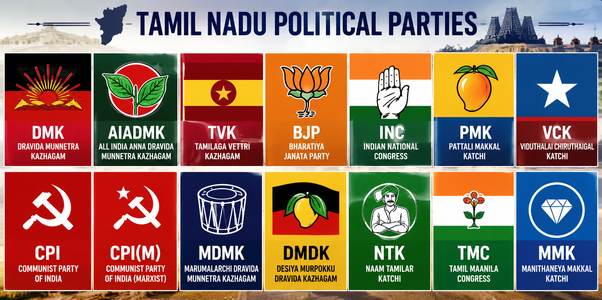

About The Election
The 2026 Tamil Nadu Legislative Assembly election was held to elect representatives for all 234 constituencies in the state. A political party or alliance needs at least 118 seats to form the government. The election was conducted by the Election Commission of India using Electronic Voting Machines (EVMs) and the first-past-the-post system. Polling took place in a single phase on 23 April 2026, and more than 5.7 crore voters were eligible to vote. Around 4.88 crore people cast their votes, making it one of the highest voter turnouts in Tamil Nadu’s history.
Parties Contesting
- Dravida Munnetra Kazhagam (DMK)
- All India Anna Dravida Munnetra Kazhagam (AIADMK)
- Tamilaga Vettri Kazhagam (TVK)
- Bharatiya Janata Party (BJP)
- Indian National Congress (INC)
- Pattali Makkal Katchi (PMK)
- Viduthalai Chiruthaigal Katchi (VCK)
- Communist Party of India (CPI)
- Communist Party of India (Marxist)
- Marumalarchi Dravida Munnetra Kazhagam (MDMK)
- Desiya Murpokku Dravida Kazhagam (DMDK)
- Naam Tamilar Katchi (NTK)
- Tamil Maanila Congress (TMC)
- Manithaneya Makkal Katchi (MMK)
TN - Election 2026 Result Overview
In the 2026 Tamil Nadu Assembly election, no single party secured an absolute majority of 118 seats. The Tamilaga Vettri Kazhagam (TVK) emerged as the largest party with 108 seats, followed by the Dravida Munnetra Kazhagam (DMK) with 59 seats and the All India Anna Dravida Munnetra Kazhagam (AIADMK) with 47 seats. The Indian National Congress won 5 seats, while smaller parties like PMK, VCK, CPI, and CPI(M) shared remaining seats. Since no party crossed the majority mark, the result led to a hung assembly and coalition talks began.